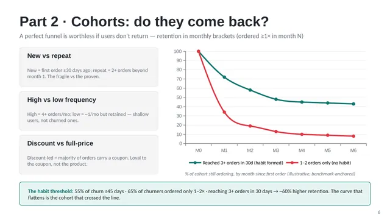

Food delivery · Product analytics
Zomato: engagement and retention in Tier-1 cities
Tier-1 growth now depends on existing users ordering more often. I diagnosed the two leaks in the way and attached a metric to every fix.

Summary
- Question
- Where do Tier-1 users leak, and which leak is worth fixing first?
- Key finding
- Don't fix the biggest drop first. Menu view loses the most users, mostly casual browsers. Cart to checkout loses high-intent users at the fee reveal, and that has a proven fix.
- What I proposed
- Fee transparency and payment hardening now, a three-orders-in-30-days habit mission for new users, then Gold value migration and rhythm nudges.
- North Star
- Delivered food orders per Tier-1 monthly transacting user, kept on a contribution-margin leash.
Growth is frequency, not acquisition
- $45BIndian online food delivery in 2024, projected at $200B+ by 2030
- 70–80%of food-delivery GOV comes from Tier-1 and the top 50 cities
- 27%of 85M annual users order monthly (about 23M)
- 3–4%contribution margin on Zomato's food delivery
Zomato's FY24 food-delivery GOV was ₹32,224 Cr, up 23% year on year, with adjusted EBITDA of ₹912 Cr: profitable, but on a thin margin. The upside is no longer new users; it's existing users ordering more often. Two leaks stand in the way: high-intent users who never finish ordering, and early-cohort decay, with 55% of churn happening in the first 45 days, before a habit forms.
The funnel: where users leak
| Stage | Users | Drop | Main cause |
|---|---|---|---|
| App open | 100,000 (100%) | – | Illustrative daily Tier-1 opens |
| Restaurant discovery | 80,000 (80%) | −20,000 | Casual, low-intent opens |
| Menu view | 52,000 (52%) | −28,000 | Choice overload: the largest absolute drop |
| Cart creation | 34,000 (34%) | −18,000 | Menu decision fatigue |
| Checkout | 22,000 (22%) | −12,000 | Fee shock at the fee reveal: the priority leak |
| Order placed | 19,000 (19%) | −3,000 | Payment failures, coupon hunting |
| Order delivered | 18,200 (18%) | −800 | Operational: cancellations, delivery failures |
18% of opens become delivered orders. Volumes are illustrative because Zomato's stage-level data isn't public; the shape is anchored to industry benchmarks.
Six drop-offs, six testable hypotheses
| Transition | Dominant cause | If, then, because | |
|---|---|---|---|
| H1 | Open to discovery | Motivation: low intent, choice overload | If home ranking is occasion- and reorder-aware, open-to-menu rises, because relevant options cut decision cost |
| H2 | Discovery to menu | Motivation: weak trust cues on cards | If cards show ETA and reliability upfront, discovery-to-menu rises, because users self-select faster |
| H3 | Menu to cart | Friction: decision load, weak long-tail visuals | If menus lead with bestsellers, combos and better photos, menu-to-cart rises, because effort falls and appeal rises |
| H4 | Cart to checkout | Cost: fee shock at the reveal | If the full fee breakdown shows at cart, cart-to-checkout rises, because there's no last-step price surprise |
| H5 | Checkout to placed | Friction: payment failures, coupon hunting | If payments are hardened and the best coupon auto-applies, checkout-to-placed rises, because fewer sessions fail or exit |
| H6 | Placed to delivered | Operational: cancellations, delays | If ETA accuracy and proactive delay messages improve, placed-to-delivered rises, because fewer orders fail |
Why I don't fix the biggest drop
Priority is recoverable intent × fixability × evidence, not the ugliest number. Menu view loses 28,000 users, but many were browsing with no real intention to order: a large number with low recoverability. Cart to checkout loses 12,000 users who chose a restaurant and built a cart, then left at the fee reveal. Those are recoverable users, and there's a proven fix.
- H4, fee transparency at cart. The strongest evidence (upfront fee breakdowns lift conversion 8–12% across industries) and a contained engineering scope.
- H5, payment and coupon hardening. Pure friction on the highest-intent users: cheap, with an immediate payoff.
- H1, occasion-aware discovery. The biggest pool but slower, needing ranking iteration and data quality, so it follows the quick wins.
Cohorts: do users come back?

I split cohorts three ways: new against repeat (the fragile and the proven), high against low frequency (four or more orders a month against about one), and discount-led against full-price (loyal to the coupon, not the product).
The habit threshold: 55% of churn happens within 45 days, 65% of churners ordered only once or twice, and reaching three or more orders in 30 days goes with about 60% higher retention.
Three cohorts, three retention fixes
- H7, new users. A habit mission that nudges a third order within 30 days, with free delivery sequenced on orders two and three, because crossing the threshold turns triers into repeaters.
- H8, discount-driven users. Migrate them to Gold or a value bundle, so loyalty shifts from price to membership value and retention holds as discounts taper.
- H9, low-frequency users. Occasion-timed nudges (weekday lunch, weekend dinner) and light streaks to move them from one order a month to two or three, with high-frequency retention as the guardrail.
One North Star, one economic leash
North Star: delivered food orders per Tier-1 monthly transacting user, watched alongside contribution margin (about 3–4% of GOV today, against a management target of 4–5%). It counts only delivered orders, so it reflects value received. Frequency moves before revenue does. And it breaks down into inputs each team can own.
Every fix gets a ladder from the lever to the guardrail. For the priority fix, H4, the target is a 5–10% relative lift in cart-to-checkout:
| Rung | Metric |
|---|---|
| Input | Share of Tier-1 sessions shown the full fee breakdown at cart |
| Output | Cart-to-checkout conversion rate |
| Leading | Abandonment at the fee-reveal step; fee-related support tickets |
| Lagging | D30 retention of exposed users; quarterly contribution margin |
| Guardrail | Margin per order; cancellation and refund rate |
Roadmap and expected impact
| Horizon | What ships |
|---|---|
| Now (0–1 quarter) | H4 fee transparency and H5 payment and coupon hardening as one checkout package; H7 new-user habit mission |
| Next (1–2 quarters) | H8 discount-to-Gold value migration; H1 occasion-aware discovery ranking |
| Later (2–3 quarters) | H9 rhythm nudges for low-frequency users; H6 ETA accuracy and proactive delay recovery |
Expected impact, anchored to benchmarks: 8–12% higher checkout conversion, a cut of 10–15% or more in first-45-day churn, a 12–15% retention uplift at 90 days and about 8% more GMV over six months.
A win that breaks the shared guardrails isn't a win: contribution margin, cancellations and refunds, ETA misses and delivery time, pricing-fairness complaints, and support contacts per order.
Limits of this work
- Funnel volumes and retention curves are illustrative, built to make the prioritisation argument visible. They aren't Zomato internals.
- Benchmarks such as 55% churn within 45 days and the three-in-30 habit threshold come from representative food-delivery and cross-industry studies.
- Public filings don't split Tier-1 from the rest, so the first step in the role would be to rebuild this analysis on real event data.